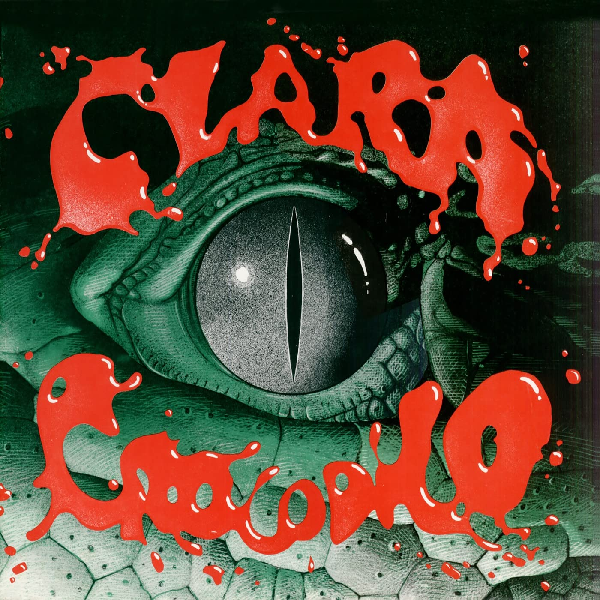

Clara Crocodilo (1980)
Arrigo Barnabé
Public enemy number one: Clara Crocodile!
Clara Crocodilo (Clara Crocodile) is the first and most well-known album by composer Arrigo Barnabé, together with his band, Sabor de Veneno (Taste of Poison.) It narrates the wild, neurotic way of living of the Brazilian metropolis, specifically São Paulo, framed by atonal, dodecaphonic, relentless instrumentals, layered chorales and oddball vocal deliveries.
This album is meant to shock you both instrumentally *and* lyrically. Lyrics contain themes of sex, abuse, gambling, drug use, etc. Reader/listener discretion is advised!
00:05
Early night
Boca da noite
00:13
Early night
Boca da noite
00:23
Early night
Boca da noite
00:25
Acapulco Drive-In!
Acapulco Drive-In!
00:34
Early night
Boca da noite
00:36
A tiny cat mouth
Boquinha de gata
00:38
Sucking, biting on
Chupando, mordendo
00:39
Cognac candies
Bala de conhaque
00:41
Colored
Colored
00:42
Color in the drizzle
Color na garoa
00:44
Early night
Boca da noite
00:46
A tiny cat mouth
Boquinha de gata
00:47
Sucking, biting on
Chupando, mordendo
00:49
Cognac candies
Bala de conhaque
00:51
Colored
Colored
00:52
Color in the drizzle
Color na garoa
00:54
Early night
Boca da noite
00:56
A tiny cat mouth
Boquinha de gata
00:58
Sucking, biting on
Chupando, mordendo
00:59
Cognac candies
Bala de conhaque
01:01
Color in the drizzle
Color na garoa
01:21
Inside the Maverick
Dentro do Maverick
01:23
Smelling of jasmine
Cheirando a jasmim
01:24
A geezer walks by
Passa o coroa
01:25
Calling out
Fazendo sinal
01:26
Psst, psst, psst, psst, hey, psst, psst, psst
Psiu, psiu, psiu, psiu, ei, psiu, psiu, psiu
01:30
Inside the Maverick
Dentro do maverick
01:32
Smelling of jasmine
Cheirando a jasmim
01:34
A geezer walks by
Passa o coroa
01:35
Calling out
Fazendo sinal
01:36
Psst, psst, psst, psst, hey, princess! Have you ever gone to the Playcenter?
Psiu, psiu, psiu, psiu, ei, princesa! Você já foi ao Playcenter?
01:43
Hum, what an extravagant idea!
Hum, mas que ideia extravagante!
01:53
So how about a movie?
Então que tal uma tela?
01:58
Oh, not that, come on
Ah, essa não, vai
02:00
Up for a drink at a drive-in?
Topas um drinque num drive-in?
02:04
My price is steep, alright dear?
Meu preço é alto, viu bem?
02:08
For you, I'll do anything
Por você eu faço tudo
02:16
For you, I'll lose my mind
Por você eu perco o juízo
02:20
Acapulco Drive-In!
Acapulco Drive-In!
02:42
Take it off! I want your brown skin
Tire! Quero a tua pele parda
02:49
Crimson lips
Lábios de carmim
02:54
Brr...nude temptation!
Brr... Tentação nua!
02:59
Uh!
Uh!
02:01
Pull on the steering wheel
Empina o volante
03:03
In the zipper, the long-awaited surprise
No zíper, a surpresa que já tarda
03:12
Leopard print panties
Calcinha imitando pele de leoparda
03:16
How cute
Mas que gracinha
03:18
Leopard print
Pele de leoparda
03:18
Nice!
Mandou ver!
03:23
Leopard print
Pele de leoparda
03:24
Using leopard print panties
Usou a calcinha imitando pele de leoparda
03:29
Acapulco Drive-In!
Acapulco Drive-In!
00:15
— Yes, I know, that everyone that goes to the drive-in
— Sim, eu sei, todo mundo que vai num drive-in
00:18
— Hopes to achieve at least one total orgasm
— Espera conseguir pelo menos um orgasmo total
00:28
You said to me
Você me falou assim
00:32
"Come, drink, serve yourself with me"
"Vem, bebe, sirva-se de mim"
00:38
And the lights went out
E a luz se apagou
00:42
Then I felt it on my skin
Então eu senti na pele
00:46
You, your feverish body
Você, seu corpo em febre
00:53
I swear I never imagined, love
Juro que eu nunca imaginei, amor
00:59
Never imagined, ah, so much sensuality
Nunca imaginei, ah, quanta sensualidade
01:01
My dear, you were very sensual!
Meu bem, você estava muito sensual!
01:05
I swear I never imagined, love (never, never!)
Juro que eu nunca imaginei, amor (Nunca, nunca!)
01:11
Oh, how electric!
Oh, quanta eletricidade!
01:17
You really were fatal
Você estava mesmo fatal
01:22
And seemed wild like an animal
E parecia louca como um animal
01:28
Saying those swears, moaning
Dizendo aqueles palavrões, gemendo
01:30
And asking for more, more, more, more
Pedindo mais, mais, mais, mais
01:33
Until we reach total orgasm
Até chegarmos ao orgasmo total
01:35
Total orgasm
Orgasmo total
01:37
Until we reach total orgasm
Até chegarmos ao orgasmo total
01:40
Total orgasm
Orgasmo total
01:42
Until we reach total orgasm
Até chegarmos ao orgasmo total
01:45
Total orgasm
Orgasmo total
01:48
Until we reach total orgasm
Até chegarmos ao orgasmo total
01:50
Total orgasm
Orgasmo total
02:20
You said to me
Você me falou assim
02:24
"Come, drink, serve yourself with me"
"Vem, bebe, sirva-se de mim"
02:30
And the lights went out
E a luz se apagou
02:34
Then I felt it on my skin
Então eu senti na pele
02:37
You, your feverish body
Você, seu corpo em febre
02:45
I swear I never imagined, love
Juro que eu nunca imaginei, amor
02:46
Never imagined, ah, so much sensuality
Nunca imaginei, ah, tanta sensualidade
02:53
So much sensuality, my dear
Quanta sensualidade, meu bem
02:55
You were really really sensual!
Você estava muito sensual mesmo!
02:57
I swear I never imagined, love (never, never!)
Juro que eu nunca imaginei, amor (Nunca, nunca!)
03:03
Oh, how electric!
Oh, quanta eletricidade!
03:09
You really were fatal
Você estava mesmo fatal
03:13
And seemed wild like an animal
E parecia louca como um animal
03:19
Saying those swears, moaning
Dizendo aqueles palavrões, gemendo
03:22
Asking for more, oh my, dear, isn't it great?
Pedindo mais, puxa vida, meu bem, como é bom
03:23
Until we reach total orgasm
Até chegarmos ao orgasmo total
03:27
Total orgasm
Orgasmo total
03:29
Until we reach total orgasm
Até chegarmos ao orgasmo total
03:32
Total orgasm
Orgasmo total
03:34
Brought by a cash on delivery order
Trazido pelo reembolso postal
03:36
You too can be like them
Você também pode ser como eles
03:39
You too can achieve your total orgasm
Você também pode conseguir seu orgasmo total
03:43
Order now through postal box 6969
Peça já pela caixa postal 6969
03:47
Your copy of "Orgasm Within Anyone's Reach!"
O seu exemplar de "O Orgasmo ao Alcance de Todos!"
03:52
And a happy orgasm, listener!
E, um feliz orgasmo, ouvinte!
03:56
Cash on delivery
Reembolso postal
03:58
Until we reach total orgasm
Até chegarmos ao orgasmo total
04:00
Total orgasm
Orgasmo total
04:02
Brought by a cash on delivery order
Trazido pelo reembolso postal
04:05
Cash on delivery
Reembolso postal
04:07
Until we reach total orgasm
Até chegarmos ao orgasmo total
04:10
Total orgasm
Orgasmo total
04:12
Brought by a cash on delivery order
Trazido pelo reembolso postal
04:15
Cash on delivery
Reembolso postal
04:17
Until we reach total orgasm
Até chegarmos ao orgasmo total
04:20
Total orgasm
Orgasmo total
04:22
Brought by a cash on delivery order
Trazido pelo reembolso postal
04:24
Cash on delivery
Reembolso postal
04:27
Until we reach total orgasm
Até chegarmos ao orgasmo total
04:29
Total orgasm
Orgasmo total
04:31
Brought by a cash on delivery order
Trazido pelo reembolso postal
04:34
Cash on delivery
Reembolso postal
04:36
Until we reach total orgasm
Até chegarmos ao orgasmo total
00:12
Dir— Dir— Dirty hole
Su— su— antro sujo
00:15
Dir— Dir— Dirty hole
Su— su— antro sujo
00:18
Dir— Dir— Dirty hole
Su— su— antro sujo
00:21
Dir— Dir— Dirty hole...
Su— su— antro sujo...
00:23
Only you didn't see it
Só você não viu
00:24
But she entered, entered full force
Mas ela entrou, entrou com tudo
00:28
Into that hole, that dirty hole!
Naquele antro, aquele antro sujo!
00:29
You never would've imagined it, but I saw it
Você nunca imaginou, mas eu vi
00:31
It was written on the neon sign: "Electronic Diversions!"
No luminoso estava escrito: "Diversões Eletrônicas!"
00:35
Only you didn't see it
Só você não viu
00:36
But she entered, entered full force
Mas ela entrou, entrou com tudo
00:38
Into that hole, that dirty hole!
Naquele antro, aquele antro sujo!
00:40
You never would've imagined it, but I saw it
Você nunca imaginou, mas eu vi
00:41
It was written on the neon sign: "Electronic Diversions!"
No luminoso estava escrito: "Diversões Eletrônicas!"
00:46
Only you, only you, only you didn't see it!
Só você, só você, só você não viu!
00:49
But she entered, entered full force
Mas ela entrou, entrou com tudo
00:51
Into that hole, that dirty hole!
Naquele antro, aquele antro sujo!
00:53
You never would've imagined it, but I saw it
Você nunca imaginou, mas eu vi
00:56
It was written on the neon sign: "Electronic Diversions!"
No luminoso estava escrito: "Diversões Eletrônicas!"
01:07
Only you didn't see it
Só você não viu
01:10
But she entered, entered full force
Mas ela entrou, entrou com tudo
01:12
Into that hole, that dirty hole!
Naquele antro, aquele antro sujo!
01:13
You never would've imagined it, but I saw it
Você nunca imaginou, mas eu vi
01:15
It was written on the neon sign: "Electronic Diversions!"
No luminoso estava escrito: "Diversões Eletrônicas!"
01:18
Only you didn't see it
Só você não viu
01:20
But she entered, entered full force
Mas ela entrou, entrou com tudo
01:22
Into that hole, that dirty hole!
Naquele antro, aquele antro imundo!
01:24
You never would've imagined it, but I saw it
Você nunca imaginou, mas eu vi
01:26
It was written on the neon sign: "Electronic Diversions!"
No luminoso estava escrito: "Diversões Eletrônicas!"
01:30
It was a bar counter with a red Formica top
Era um balcão de bar de fórmica vermelha
01:35
It was a bar counter with a red Formica top
Era um balcão de bar de fórmica vermelha
01:40
It was a bar counter with a red Formica top
Era um balcão de bar de fórmica vermelha
01:45
It was a bar counter with a red Formica top...
Era um balcão de bar de fórmica vermelha...
01:50
And you, on that counter
E você ali, naquele balcão
01:53
With what? (a red Formica top)
De quê? (De fórmica vermelha)
01:55
Crying, inebriated, you said:
Chorando, embriagado, pedia:
01:57
"Waiter, one more (gin tonic)"
"Garçom, mais um (gin tônica)"
01:59
But he warned
Mas ele te avisou:
02:01
"You already drank too much, drank too much
"Você já bebeu muito, já bebeu demais
02:03
Go home, kid"
Vai pra casa, moleque"
02:05
And you went, stumbling
E você foi, cambaleando
02:08
To...to the phone
Até...até o telefone
02:09
Payphone (ding, ding, ding, ding...)
Telefone público (blim, blim, blim, blim...)
02:11
And dialed, dialed, dialed the same number again (number)
E discou, discou, discou novamente o mesmo número (número)
02:20
— Yes, I well know you grew tired of waiting for her all night by the window
— Sim, eu sei bem, você cansou de esperar por ela toda noite na janela
02:28
— Speed shining in the nervous delirium of these illuminated ads that are the lies of life
— Velocidade a luzir nesses delírios nervosos dos anúncios luminosos que são a vida a mentir
02:37
— And came to give yourself up to drinks on this here bar counter
— E veio se entregar à bebida aqui neste balcão de bar
02:43
— Drawing circles with the glass of gin tonic
— Fazendo círculos com o copo de gin tônica
02:46
— Staring at the red Formica
— Olhando a fórmica vermelha
02:49
— I feel sorry for you. Yes, friend! Pity! Yeah!
— Você me dá dó. Sim, meu amigo! Pena! É!
02:57
And you, on that counter
E você ali, naquele balcão
03:00
With what? (a red Formica top)
De quê? (De fórmica vermelha)
03:02
Crying, inebriated, you said:
Chorando, embriagado, pedia:
03:05
"Waiter, one more (gin tonic)"
"Garçom, mais um (gin tônica)"
03:07
But he warned
Mas ele te avisou:
03:08
"You already drank too much, drank too much
"Você já bebeu muito, já bebeu demais
03:10
Go home, kid"
Vai pra casa, moleque"
03:12
And you went, stumbling
E você foi, cambaleando
03:14
To...to the phone
Até...até o telefone
03:16
Payphone (ding, ding, ding, ding...)
Telefone público (blim, blim, blim, blim...)
03:17
And dialed, dialed, dialed the same number again (number)
E discou, discou, discou novamente o mesmo número (número)
03:50
At the arcade, she delivered all her cash
No fliperama, ela entregava toda sua grana
03:54
To who?
Pra quem?
03:55
To some guy (yeah?) some naughty (you don't say...) boy
Prum boy (É?), prum boyzinho (Não diga...) sacana
03:59
Ex-slot car driver
Ex-motorista de autorama
04:02
Now addicted to these horse racing machines...addicted
Agora viciado nessas máquinas de corrida...viciado
04:06
That had earned a reputation for his prowess behind the wheel
Que tinha ganho fama pela sua perícia como volante
04:12
And by the violent treatment he afforded his lovers
E pelo tratamento violento que dispensava a suas amantes
04:15
But well, she was feral...
Mas também, ela era feroz...
04:18
So much so that he left her bite marks on his arm to later show the police chief
Tanto que ele deixou a marca dos dentes dela no braço pra depois mostrar pro delegado
04:24
In case she ever went to complain about the beatings she received over his uncontrollable jealousy
Se acaso ela fosse queixar das surras que levou por causa de um ciúme incontrolável
05:04
After, when the sun came up
Depois, quando clareou
05:14
They went to a hotel
E eles foram pro hotel
05:24
She saw a drunk passed out on the ground
Ela viu um bêbado jogado no chão
05:44
And smiled perversely
E sorriu perversa
05:57
Smiled perversely
Sorriu perversa
06:08
Smiled perversely
Sorriu perversa
(instrumental)
05:41
Only you didn't see it
Só você não viu
00:44
But she entered, entered full force
Mas ela entrou, entrou com tudo
00:46
Into that hole, that dirty hole!
Naquele antro, aquele antro sujo!
00:47
You never would've imagined it, but I saw it
Você nunca imaginou, mas eu vi
00:49
It was written on the neon sign: "Electronic Diversions!"
No luminoso estava escrito: "Diversões Eletrônicas"!
00:52
Only you didn't see it
Só você não viu
00:54
But she entered, entered full force
Mas ela entrou, entrou com tudo
00:56
Into that hole, that dirty hole!
Naquele antro, aquele antro sujo!
06:58
You never would've imagined it, but I saw it
Você nunca imaginou, mas eu vi
07:00
It was written on the neon sign: "Electronic Diversions!"
No luminoso estava escrito: "Diversões Eletrônicas"!
07:06
It was a bar counter with a red Formica top
Era um balcão de bar de fórmica vermelha
07:11
It was a bar counter with a red Formica top...
Era um balcão de bar de fórmica vermelha...
07:12
And you, drunk, inebriated, fighting with the waiter (And you, on that counter)
E você ali, bêbado, embriagado, brigando com o garçom (E você ali naquele balcão)
07:18
Drawing circles with your glass, yeah... (And you, on that counter)
Fazendo círculos com o copo, é... (E você ali naquele balcão)
07:23
I feel sorry for you, yes, I pitied you, pity (And you, on that counter)
Você me dá dó, sim, eu sentia pena de você, piedade (E você ali naquele balcão)
07:34
(And you, on that counter) Drunk!
(E você ali naquele balcão) Bêbado!
07:36
(And you, on that counter) A worm, a human rag
(E você ali naquele balcão) Um verme, um farrapo humano
07:41
(And you, on that counter) Ah, what a pity!
(E você ali naquele balcão) Ah, que dó!
07:46
(And you, on that counter) You're a mess, you're a loser
(E você ali naquele balcão) Você está acabado, você é um fracassado
01:48
It disappeared
Desapareceu
02:03
It faded away
Foi sumindo
02:09
The way a sound does
Como um som se vai
02:26
I always thought
Sempre achei
02:34
It isn't just sound
Não é só som
02:48
It's wind on the leaves
É vento nas folhas
03:09
Water murmur
Murmúrio de água
00:43
Have you seen that girl
Você já viu aquela menina
00:45
That has a different kind of swing?
Que tem um balanço diferente?
00:48
If you've seen her and noticed it
Se você viu e reparou
00:50
She has a different way of smiling, talking, looking
Ela tem um jeito de sorrir, de falar, de olhar
00:53
That drives me crazy
Que me deixa louco
00:55
Oh, I go crazy
Ah, eu fico louco
01:00
I don't know if she came from the moon
Não sei se ela veio da lua
00:02
Or if she came from mars to capture me
Ou se veio de marte me capturar
01:06
I just know that when she kisses me
Só sei que quando ela me beija
01:08
I feel a taste
Eu sinto um gosto
01:10
A strange one, a weird thing
Uma coisa estranha, um negócio esquisito
01:00
Dark from the future
Meio amargo do futuro
01:17
Taste of poison!
Sabor de veneno!
01:19
Taste of poison!
Sabor de veneno!
01:22
Taste of poison!
Sabor de veneno!
01:24
Taste of poison!
Sabor de veneno!
01:27
Have you seen that girl
Você já viu aquela menina
01:28
That has a different kind of swing?
Que tem um balanço diferente?
01:33
If you've seen her and noticed it
Se você viu e reparou
01:34
She has a different way of smiling, talking, looking
Ela tem um jeito de sorrir, de falar, de olhar
01:37
That drives me crazy
Que me deixa louco
01:39
Oh, makes me crazy
Me deixa maluco
01:45
I don't know if she came from the moon
Não sei se ela veio da lua
01:46
Or if she came from mars to capture me
Ou se veio de marte me capturar
01:51
I just know that when she kisses me
Só sei que quando ela me beija
01:53
I feel a taste
Eu sinto um gosto
01:54
Brake, Biafra! What a strange thing!
Olha o breque, Biafra! Que coisa estranha!
01:58
Dark from the future
Meio amargo do futuro
02:01
Taste of poison!
Sabor de veneno!
02:04
Taste of poison!
Sabor de veneno!
02:06
Taste of poison!
Sabor de veneno!
02:08
Taste of poison!
Sabor de veneno!
02:11
Taste of poison!
Sabor de veneno!
02:14
Taste of poison!
Sabor de veneno!
02:16
Taste of poison!
Sabor de veneno!
02:19
Taste of poison! (Taste of what?)
Sabor de veneno! (Sabor de quê?)
02:21
Have you seen that girl
Você já viu aquela menina
02:23
That has a different kind of—
Que tem um balanço diferen—
02:24
Have you seen that girl
Você já viu aquela menina
02:26
That has a different kind of—
Que tem um balanço diferen—
02:27
Have you seen that girl
Você já viu aquela menina
02:29
That has a different kind of swing?
Que tem um balanço diferente?
00:16
Yesterday, at the cemetery
Ontem, no cemitério
00:26
She screamed, screamed a lot
Ela gritou, gritou muito
00:38
When they closed her husband's coffin
Quando fecharam o caixão de seu marido
00:53
She was hyste— hyste— hyste— hysterical
Ficou histé— histé— histé— histérica
(instrumental)
03:17
Yesterday, at the cemetery
Ontem, no cemitério
03:30
She screamed, screamed a lot
Ela gritou, gritou muito
03:32
When they closed her husband's coffin
Quando fecharam o caixão de seu marido
03:36
She was hyste— hyste— hyste— hysterical!
Ficou histé— histé— histé— histérica!
03:39
Blasphemed! Ripped her hairs off
Blasfemou! Arrancou cabelos
03:43
Implored for God to take her too
Rogou a Deus que a levasse também
03:45
Implored! Rent her clothes
Implorou! Rasgou as roupas
03:46
Dragged herself!
Se arrastou!
00:48
Despair! She was in despair
Que desespero! Ela tava desesperada
00:51
Her entire body ached with longing
Seu corpo inteiro tava doendo de saudade
00:54
For her husband...her adored husband
Do seu marido...do maridinho adorado
00:56
Longing? For the adored husband? She longed for him?
Saudade? Do maridinho adorado? Ela tava com saudade?
04:02
Night came and she was there on the floor
Anoiteceu e ela ficou ali jogada
04:05
Hiccuping, and, past midnight
A soluçar e quando veio a madrugada
04:08
She went out to the Riviera
Ela saiu e foi até o Riviera
04:10
And gave herself out to every man she found
E se entregou a todo homem que encontrou
04:20
Today, she just drinks
Hoje, ela só bebe
04:23
Never forgets his death
Nunca esqueceu a sua morte
04:26
Lives in bars and cafés, telling everyone:
Vive nos bares e cafés dizendo a todos:
04:29
"He died because he thought, thought too much!"
"Ele morreu porque pensou, pensou demais!"
04:33
She yells, and blasphemes
E ela grita, e ela blasfema
04:36
And begs to God:
E roga a Deus:
04:37
"May you take everyone else as well!"
"Que leve todos também!"
04:55
"May you take everyone else as well!"
"Que leve todos também!"
01:38
Name: Durango
Nome: Durango
01:41
Occupation: Office boy
Profissão: Office boy
01:45
Worked like a dog all week
Trabalhava que nem um desgraçado a semana inteira
01:48
Saturday, however, he was hard up
No sábado, porém, ele tava duro
01:53
It was Saturday and there he was, alone
Era sábado e ele ali, sozinho
01:58
Without any cash
Sem nem um tostão
02:00
He thought about that morena TV star
Pensava naquela vedete morena
02:04
That took off her clothes on the Golden Strip Show
Que tirava a roupa no Áurea Strip Show
02:08
He thought about her dancing seductively
Pensava nela dançando coquete
02:13
Discotheque, Discotheque
Discoteca, Discoteca
02:15
He was hard up and decided to turn on
Ele tava duro e resolveu ligar
02:20
The TV, the TV, the TV, the TV!
A TV, a TV, a TV, a TV!
02:26
The TV, the TV, the TV, the TV!
A TV, a TV, a TV, a TV!
02:36
He saw a beautiful chacrete
Ele viu uma chacrete linda
02:38
Chewing gum, looking at him
Mascando chiclete, olhando pra ele
02:41
Smiling, smiling
Sorrindo, sorrindo
02:42
He saw a beautiful chacrete
Ele viu uma chacrete linda...
02:43
His first mistake: turning on the TV
Primeiro erro: ligar a TV
02:48
His second mistake: paying attention to the image that was being transmitted
Segundo erro: prestar atenção na imagem que estava sendo transmitida
02:54
It was the face of a woman he knew!
Era a face de alguém conhecida!
02:58
Yes, so long ago!
Sim, a muito tempo!
03:01
It couldn't be! That face, he knew her!
Não podia ser! Aquele rosto, ele a conhecia!
03:05
Oh no, God! It was Perpétua, his old girlfriend
Oh não, Deus! Era Perpétua, a sua antiga namoradinha!
03:10
But she was just...she was just...
Mas ela era apenas...ela era apenas...
03:18
She was a supermarket cashier
Ela era caixa num supermercado
03:25
Everyday she just, just pressed
Todo dia ela só, só apertava
03:32
Buttons and those machines sung
Os botões e aquelas máquinas cantavam
03:40
She was a supermarket cashier
Ela era caixa num supermercado
03:47
Everyday she just, just pressed
Todo dia ela só, só apertava
03:54
Buttons and those machines sung
Os botões e aquelas máquinas cantavam
04:01
Yes, from a simple supermarket cashier to a famous star
Sim, de uma simples caixa a uma estrela famosa
04:06
If you want to have her again
Se você quiser possuí-la novamente
04:08
You'll need to scrounge up a lot of money, Durango!
Você precisa arranjar muito dinheiro, Durango!
04:12
What was that newspaper ad again?
Como era mesmo aquele anúncio no jornal?
04:16
Durango, that newspaper ad...
Durango, aquele anúncio no jornal...
04:30
"Wanted: young man for testing a new product, pays well"
"Procura-se rapaz para testar um novo produto, paga-se bem"
04:34
"Wanted: young man for testing a new product, pays well"
"Procura-se rapaz para testar um novo produto, paga-se bem"
04:37
"Wanted: young man for testing a new product, pays well"
"Procura-se rapaz para testar um novo produto, paga-se bem"
04:41
"Wanted: young man for testing a new product, pays well"
"Procura-se rapaz para testar um novo produto, paga-se bem"
04:55
He then went out searching
Ele então saiu pra procurar
04:59
Alone, this address
Sozinho o tal endereço
05:02
And ended up at a dark, gloomy house
E deu numa casa escura, sombria
05:06
That even scared him
Que até dava medo
05:08
But he went in
Mas ele entrou
05:11
A pretty, hot nurse
Uma enfermeira bonita, gostosa
05:14
Said to him:
Falou assim pra ele:
05:16
"Come here, dear, and I'll give you a
"Venha aqui, querido, que eu vou te dar uma
05:21
Special injection, you'll float"
Injeção especial, você vai flutuar"
05:27
Special injection, you'll float
Injeção especial, você vai flutuar
05:34
Special injection, you'll float
Injeção especial, você vai flutuar
05:40
Special injection, you'll float
Injeção especial, você vai flutuar
05:46
Special injection, you'll float
Injeção especial, você vai flutuar
05:50
Special injection, you'll float
Injeção especial, você vai flutuar
06:00
— And he floated. Yes...he floated far away from there, wrapped in a delicious sensation. But what he didn't know, was that he was being transformed into a terrible mutant monster, half man, half reptile, victim of a powerful multinational laboratory that did not hesitate in ruining his life to achieve its malefic intent. The scientists had calculated everything, but what they could not have imagined was that that creature had conserved part of its conscience. And soon, yes, friends, soon, all of his power was transformed into ire and inhuman violence. The scientists were the first to know his fury. Soon, the entire city would tremble once they heard about Clara Crocodile
— E ele flutuou. Sim...flutuou para longe dali, envolvido numa sensação deliciosa. Mas o que ele não sabia, era que estava sendo transformado num terrível monstro mutante, meio homem, meio réptil, vítima de um poderoso laboratório multinacional que não hesitou em arruinar sua vida para conseguir seus maléficos intentos. Os cientistas haviam calculado tudo, mas o que eles não imaginavam era que aquela criatura havia conservado parte de sua consciência. E logo, sim, meus amigos, e logo, todo seu poder se transformou em ira e violência sobre-humanas. Os cientistas foram os primeiros a conhecer sua fúria. Depois, toda a cidade estremeceria ao ouvir falar em Clara Crocodilo
00:08
São Paulo, December 31st, 1999! There's little time left, little, very little, until the year 2000 and you, incautious listener, that, in the comfort of your home, surrounded by family members, unfortunately placed this record on the turntable. You that, now, waits anxiously for the pop of the champagne bottle and the clink of the glasses. You, mortal enemy of anguish and despair, get ready...the nightmare's begun. Yes, I know, you'll say that it's just your imagination. That you've been reading too many comic books lately. But then why is it that your hands trembled, trembled, trembled so much, when you lit that cigarette? And why is it that you grew so pale all of a sudden? Would all of this be just your imagination? No, my friend, go to the bathroom now, before it's too late, because in this mere record that you bought in some second-hand bookstore, was imprisoned for more than 20 years, the dangerous outcast, delinquent, criminal, public enemy number one: Clara Crocodile!
São Paulo, 31 de Dezembro de 1999! Falta pouco, pouco, muito pouco mesmo para o ano 2000 e você, ouvinte incauto, que no aconchego de seu lar, rodeado de seus familiares, desafortunadamente colocou este disco na vitrola, você que, agora, aguarda ansiosamente o espocar da champanha e o retinir das taças, você, inimigo mortal da angústia e do desespero, esteja preparado...o pesadelo começou. Sim, eu sei, você vai dizer que é sua imaginação. Que você andou lendo muito gibi ultimamente. Mas então por que suas mãos tremeram, tremeram, tremeram tanto, quando você acendeu aquele cigarro? E por que você ficou tão pálido de repente? Será tudo isto fruto da sua imaginação? Não, meu amigo, vá ao banheiro agora, antes que seja tarde demais, porque neste mero disco que você comprou num sebo, esteve aprisionado por mais de 20 anos, o perigoso marginal, o delinquente, o facínora, o inimigo público número um: Clara Crocodilo!
01:29
Silence gives consent, I don't go silent
Quem cala consente, eu não calo
01:32
I won't die in the hands of a cop
Não vou morrer nas mãos de um tira
01:35
Silence gives consent, I'm defiant
Quem cala, consente, eu desacato
01:38
I won't die in the hands of a rat
Não vou morrer nas mãos de um rato
01:40
Na-na-na, I wont' die, na-na-na-na
Na-na-na, não vou morrer, na-na-na-na
01:43
Don't even talk to me about that
Você nem fala nisso pra mim
01:45
I won't die, no!
Eu morrer não vou, não!
01:52
I won't be stuck in this hell anymore
Não vou ficar mais neste inferno
01:55
Neither will I end up in a cemetery
Nem vou parar num cemitério
01:58
I won't be stuck in this hell anymore
Não vou ficar mais nesse inferno
02:01
Neither will I end up in a cemetery
Nem vou parar num cemitério
02:20
Silence gives consent, I don't go silent
Quem cala consente, eu não calo
02:23
I won't die in the hands of a cop
Não vou morrer nas mãos de um tira
02:26
Silence gives consent, I'm defiant
Quem cala, consente, eu desacato
02:29
I won't die in the hands of a rat
Não vou morrer nas mãos de um rato
02:32
I won't, no...
Não vou, não...
02:34
In the hands—
Nas mãos—
02:37
I won't!
Vou não!
02:38
Na-na-na-na!
Na-na-na-na!
02:41
No!
Não!
02:42
I won't be stuck in this hell anymore
Não vou ficar mais neste inferno
02:46
Neither will I end up in a cemetery
Nem vou parar num cemitério
02:48
I won't be stuck in this hell anymore
Não vou ficar mais nesse inferno
02:51
Neither will I end up in a cemetery
Nem vou parar num cemitério
03:06
Machine guns can't hit me
Metralhadora não me atinge
03:08
I won't be stuck in this ring anymore
Não vou ficar mais neste ringue
03:11
Machine guns can't hit me
Metralhadora não me atinge
03:14
I won't be stuck in this ring anymore
Não vou ficar mais neste ringue
03:17
Gun it down!
Metralha!
03:20
Hey, you, listening to me
Ei, você que está me ouvindo
03:23
You think you can catch me?
Você acha que vai conseguir me agarrar?
03:25
Then take this!
Pois então tome!
03:30
I can see that you're persistent!
Já vi que você é perseverante!
00:35
Let's see if you can take this one!
Vamos ver se você segura esta!
03:39
Girls, do you think they want more?
Meninas, vocês acham que eles querem mais?
03:43
They do!
Querem sim!
03:49
You, since you're so smart
Você, que então é tão espertinho
03:52
Let's see if you can tail me in this maze
Vamos ver se você consegue me seguir neste labirinto
(instrumental)
04:40
Clara Crocodile escaped
Clara Crocodilo fugiu
04:43
Clara Crocodile got away
Clara Crocodilo escapuliu
04:45
Clara Crocodile escaped
Clara Crocodilo fugiu
04:48
Clara Crocodile got away
Clara Crocodilo escapuliu
04:51
Have some shame
Vê se tem vergonha na cara
04:54
And help out Clara, you crook
E ajuda Clara, seu canalha
04:56
Have some shame
Vê se tem vergonha na cara
04:59
And help out Clara, you crook
E ajuda Clara, seu canalha
05:02
Watch out for the spotlight on your eyes
Olha o holofote no olho
05:05
Lucky, you're nothing more than a cabbage
Sorte, você não passa de um repolho
05:08
Watch out for the spotlight on your eyes
Olha o holofote no olho
05:10
Lucky, you're nothing more than a cabbage
Sorte, você não passa de um repolho
05:13
Clara Crocodile escaped
Clara Crocodilo fugiu
05:16
Clara Crocodile got away
Clara Crocodilo escapuliu
05:24
Have some shame
Vê se tem vergonha na cara
05:27
And help out Clara, you crook
E ajuda Clara, seu canalha
05:35
Watch out for the spotlight on your eyes
Olha o holofote no olho
05:38
Lucky, you're nothing more than a cabbage
Sorte, você não passa de um repolho
05:47
Clara Crocodile escaped
Clara Crocodilo fugiu
05:49
Clara Crocodile got away
Clara Crocodilo escapuliu
05:58
Have some shame
Vê se tem vergonha na cara
06:00
And help out Clara, you crook
E ajuda Clara, seu canalha
06:09
Clara Crocodile escaped
Clara Crocodilo fugiu
06:11
Clara Crocodile got away
Clara Crocodilo escapuliu
06:14
Clara Crocodile escaped
Clara Crocodilo fugiu
06:17
Clara Crocodile got away
Clara Crocodilo escapuliu
06:20
Have some shame
Vê se tem vergonha na cara
06:22
And help out Clara, you crook
E ajuda Clara, seu canalha
06:25
Have some shame
Vê se tem vergonha na cara
06:28
And help out Clara, you crook
E ajuda Clara, seu canalha
06:31
Watch out for the spotlight on your eyes
Olha o holofote no olho
06:34
Lucky, you're nothing more than a cabbage
Sorte, você não passa de um repolho
06:36
Watch out for the spotlight on your eyes
Olha o holofote no olho
06:39
Lucky, you're nothing more than a cabbage
Sorte, você não passa de um repolho
06:46
Where will Clara Crocodile go? Where?
Onde andará Clara Crocodilo? Onde andará?
06:53
Is she stealing from a supermarket?
Será que ela está roubando algum supermercado?
06:58
Is she robbing some bank?
Será que ela está assaltando algum banco?
07:02
Is she behind the door of your bedroom, waiting for just the right moment in which to kill you alongside your loved ones?
Será que ela está atrás da porta de seu quarto, aguardando o momento oportuno para assassiná-lo com os seus entes queridos?
07:11
Or is she asleep in your mind, waiting for a good occasion to awaken and go down to your heart...listener mine, my brother?!
Ou será que ela está adormecida em sua mente esperando a ocasião propícia para despertar e descer até seu coração...ouvinte meu, meu irmão?!